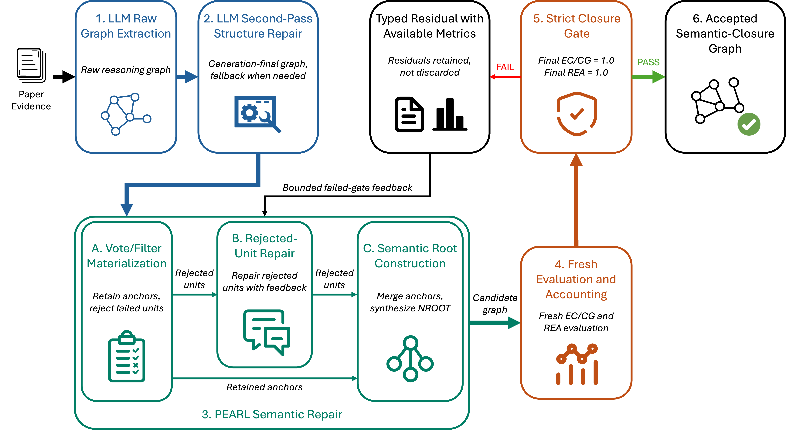
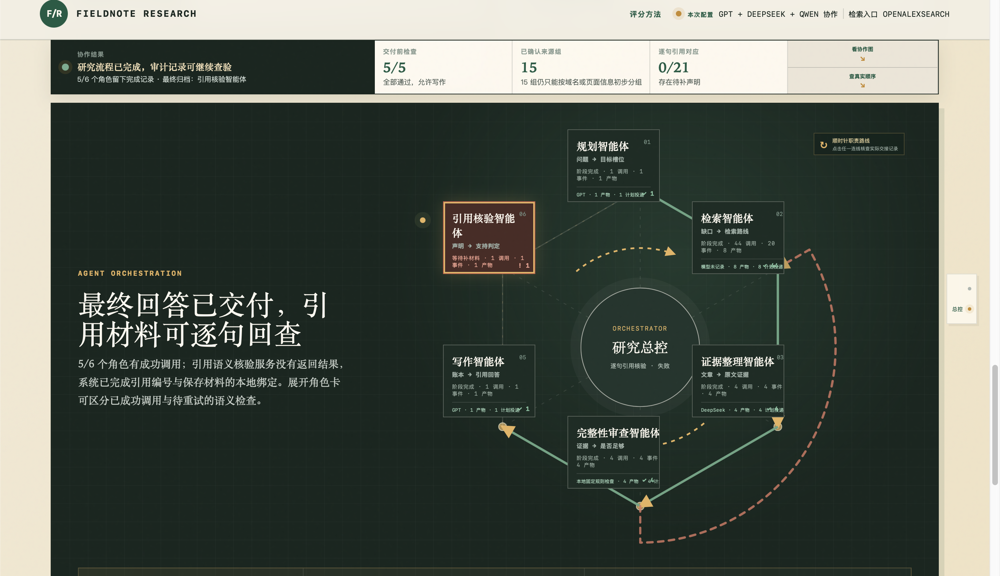

苏渤涵
Bohan Su
大模型推理 · 结构化表示 · 推理增强
LLM Reasoning · Structured Representation · Reasoning Enhancement
武汉大学 软件工程 · Wuhan University, Software Engineering
GPA: 3.74/4.0 · Ranking: Top 25%
Email: 2023302143001@whu.edu.cn · GitHub: github.com/BohanSu
1
Research Interests
Research Direction
研究兴趣是大模型推理与机器学习，关注如何用结构化表示与推理增强提升模型在计算机视觉和科学问题解决中的理解、泛化与可验证性。
Structured Representation
关注把图像、文本与推理过程中的关键信息抽取为稳定中间结构，如几何关系、语义单元、关系图与约束空间，以提升表示质量、任务迁移能力和分析可解释性。
Computer Vision
关注复杂场景下的视觉理解与实例辨识，希望把结构先验、跨模态信息和学习机制结合起来，提升模型在遮挡、外观变化与开放环境中的鲁棒性和泛化能力。
Reasoning Enhancement
关注让模型在多步推理与科学问题求解中具备更清晰的中间过程和验证路径，希望结合结构约束、外部工具与反馈机制，提升推理质量、结果可信度和知识复用能力。
Research Goal: 在视觉理解与科学问题求解中，把结构化表示、学习机制与推理增强结合起来，形成更稳定、可验证、可迁移的智能系统。
2
Education & Academic Background
Education
| Institution | 武汉大学 (Wuhan University) |
| Degree | B.Eng. in Software Engineering |
| Duration | Sep 2023 - Jun 2027 (Expected) |
| GPA | 3.74/4.0, Ranking: Top 25% |
| Language | CET-6: 506, CET-4: 595 |
Relevant Coursework
Core CS: Computer Vision, AI Frontiers, Operating Systems, Computer Networks,
Database Systems, Software Engineering, Software Quality Assurance, Object-Oriented Programming
Math & Theory: Linear Algebra, Probability & Statistics, Discrete Mathematics, Data Structures & Algorithms
Online Learning
Machine Learning for Computer Vision
University of Oxford, Instructor: Jens Rittscher
Score: 93.10/100
系统学习视觉任务中的表征学习、模型评估、误差分析和实验设计方法，为后续ReID研究提供坚实基础。
Research Skills
- English academic writing and technical communication
- Multi-dataset evaluation and ablation study design
- Training management and result attribution
- Experimental protocol design and reproducibility
- Literature review and survey organization
3
Research I: Universal Person Re-Identification
Reliability-Aware 3D Geometric Injection for Universal Person Re-identification · First Author · ECCV 2026 Accept
Problem & Motivation
遮挡、换装与跨模态使外观线索失稳，单纯依赖2D视觉特征难以在复杂场景下保持识别稳定性。现有方法缺少外观无关的辅助线索。
Method
- UniGeo Framework: 将SMPL人体参数解耦为全局体型（shape parameters）与关节拓扑结构（joint topology），作为外观无关的几何先验注入ReID表征学习
- Reliability-Aware Gate: 设计置信度门控机制，根据几何估计的可靠性动态融合2D视觉表征与3D结构表征，降低低置信几何估计对识别特征的干扰，保持对现有backbone的轻量适配
Experiments & Results
- 在Market-1501、MSMT17、CUHK03等9个ReID benchmark上完成统一协议下的对比实验
- 设计完整的消融实验验证UniGeo各组件的有效性
- 图像扰动稳定性实验分析3D几何注入在遮挡、换装和跨模态场景下的收益边界
- 实验表明该方法在保持轻量化的同时，在复杂外观变化场景下显著提升识别稳定性

Figure 1: UniGeo Framework Architecture
4
Research II: Scientific Reasoning Graph Extraction
PEARL: Auditable Repair for Scientific Reasoning Graph Extraction · First Author · WAICA 2026 Workshop -> AAAI (In Preparation)
Problem & Motivation
目标是把论文中的观察、证据、中间结论和最终结论组织成推理图。问题在于，LLM 生成的图往往格式不稳定、关系类型混乱、根节点方向错误，难以直接用于后续分析与复用。
Method: Materialization, Repair, and Audit
- 先规范化：把原始输出整理成统一图结构，修复格式、端点和根节点等结构问题。
- 再局部修复：结合评测反馈，只修正被判错的关系、推理单元和最终结论，而不是整图重写。
- 最后严格验收：只有通过统一标准的图才被保留，其余样本保留失败类型和审计记录。
Results & Contribution
在五个 ARCHE 模型档案、共 350 篇论文样本上，strict pass 从 0/350 提升到 300/350，平均 EC 从 0.827 提升到 0.896，平均 REA 从 0.339 提升到 0.906。其中，EC 的官方定义是 content grounding / entity coverage，衡量图中节点内容是否被论文证据充分覆盖；REA 的官方定义是 reasoning edge accuracy，衡量推理边及其指向关系是否判断正确。整体上，这项工作把“看起来像图”的输出，变成了可检查、可追踪、可复用的推理图结果。

Figure 2: PEARL framework overview from materialization to strict semantic closure
Evaluation Standard: 只有当图里的关键内容被完整抽出，并且推理关系也连对时，图才会被接收；否则保留失败类型与修复轨迹，便于继续分析。
5
Research III: Survey on Appearance Variations in ReID
Appearance Variations in Person Re-Identification: A Survey · Student First Author · TPAMI (In Preparation)
Problem Reframing
- 不再只把 ReID 看成“跨镜头匹配”，而是统一放到 appearance variation 问题下讨论。
- 把外观变化分为三类：短期观测扰动、长期外观演化、复合变化耦合。
- 进一步细分结构几何、光谱环境、信息缺失、衣着状态、非衣着外观漂移与部署分布演化等子问题。
Methodology Framework
- 用 robustness 与 generalization 两条主线重组现有方法，而不是按单一 benchmark 罗列。
- 对应方法涵盖 invariant representation、generative augmentation 与 domain generalization / adaptation。
- 同时把 VLM、causal intervention 与 lifelong adaptation 纳入统一讨论框架。
Benchmark & Evaluation
| 短期基准 | 如 Market-1501、MSMT17、Occluded-Duke、SYSU-MM01、MARS，核心评估观测扰动下的鲁棒性。 |
| 长期基准 | 如 PRCC、LTCC、DeepChange、CCVID、MEVID、CCPG，核心评估换装与长期重现下的身份保持。 |
| 复合基准 | 如 OC4-ReID、CMCC-ReID、MP-ReID、AG-VPReID、CHIRLA，核心评估多种变化同时出现时的泛化能力。 |
Contribution
- 把短期、长期和复合变化放进同一 taxonomy 中，明确不同 failure mode 的边界。
- 强调 benchmark 不是结果附录，而是问题定义本身。
- 讨论 Rank-k / mAP 在长期场景下的局限，并提出更结构化的评测视角。
- 形成后续鲁棒表征研究的概念坐标与评测依据。
6
Ongoing Research
Current Lines
围绕视觉实例辨识研究线，正在推进统一评测、方法扩展与更一般化的实例辨识设定。
ONGOING 01
Full-Scenario Evaluation Pipeline
正在搭建一个面向复杂视觉辨识任务的全场景测评库，并围绕统一 backbone 推进批量化方法测试与结果整合。
- 构建覆盖多类场景变化与任务设定的全场景测评库
- 搭建一个大模型 backbone，作为统一测试与扩展的实验底座
- 批量进行方法测试、结果汇总与对比分析
ONGOING 02
ECCV Extension of UniGeo
基于 UniGeo 的 ECCV 工作继续补充分析和扩展，形成更完整的后续版本。
- 补充更强设定、更多分析与更统一的叙事主线
- 补充鲁棒性、失败案例与跨设定一致性分析
- 从单篇方法论文走向持续性的研究线索
ONGOING 03
Category-Agnostic ReID Foundation
在结构先验与统一协议基础上，继续推进类别无关视觉辨识基座。
- 从 person-specific 任务走向更一般的实例辨识设定
- 关注跨类别、跨场景变化下表征是否仍然稳定
- 沉淀更可迁移的 backbone、protocol 与 analysis framework
7
Engineering Projects & Competitions
模块化机器人系统开发 (Modular Robot System)
National First Prize (Top 6), IoT Design Competition · Nov 2023 - Aug 2025
面向少儿编程教育场景，参与模块化智能硬件系统和二总线供电通信一体化平台的软件架构设计；负责模块协同、总线仲裁、热插拔识别与总线合并等底层控制逻辑；参与通信协议、嵌入式驱动与系统联调，配合完成三轮PCB迭代、24V工业环境适配和长时间运行测试。实测通信成功率达98.5%，通信效率较原方案提升约40%。
A4R引导式手机AI助手
National Second Prize, Youth Innovation Competition · May - Aug 2025
针对手机智能体在模糊需求场景下缺少主动澄清机制的问题，参与设计A4R（Ask for Refine）引导式交互方案，将"先执行"改为"先澄清、再执行、再验证"；构建150余条真实交互样本，覆盖6大领域16款应用。A4R完成率64.68%，跳步率31.69%，有效引导率72.33%。
A2A协议多智能体系统
Shanghai AI Academy, Autumn Camp · Nov 2025
基于Holos平台与A2A协议（v0.3.0）完成多智能体系统开发；引入GuideAgent将模糊需求转化为确定性任务；完成A2A JSON-RPC接口适配、SSE流式响应、任务指纹去重、LLM/规则双轨降级和多Agent日志调试。
小米四足机器人物流配送系统
National Third Prize, Xiaomi Cup · Mar - Aug 2025
围绕"复杂环境下的智能物流配送"赛题，基于小米四足开发平台完成参赛系统开发；参与系统方案设计、算法调试、任务流程优化与现场测试，重点支撑各阶段之间的状态切换和动作时序衔接。
Smartphone Battery Modeling
MCM Finalist Award · Jan - Feb 2026
2026年MCM A题：建立统一物理层，并行构建2RC等效电路模型+扩展卡尔曼滤波（ECM-EKF）与PINN双分支求解器；在8类异构数据源、超过12万个时间步上验证。PINN的SOC RMSE降至1.24%，整体TTE预测MAPE达8.7%。
8
Skills & Competencies
Research
- Person Re-Identification
- SMPL & 3D Structure Priors
- 3D Gaussian Splatting
- Scientific Reasoning Graphs
- Multi-dataset Evaluation
- Ablation Study Design
Engineering
- Python, C/C++, Java
- Git, MATLAB
- RISC-V / ESP32
- Embedded Protocols
- System Integration
LLM Systems
- Multi-Agent Orchestration
- Task Routing & Validation
- GPT / Claude / Gemini API
- Structured Output
- Observability & Debugging
Honors & Awards
Competitions
- 2025 全国大学生物联网设计大赛（华为杯）全国一等奖 (Top 6)
- 2024 全国大学生物联网设计大赛华中及西南分赛区 一等奖
- 2025 中国青年科技创新揭榜挂帅擂台赛 全国二等奖
- 2025 全国大学生计算机系统能力大赛智能系统创新设计赛（小米杯）全国三等奖
- 2026 第十九届全国大学生软件创新大赛华南区域赛 三等奖
- 2026 美国大学生数学建模竞赛 Finalist
- 2025 美国大学生数学建模竞赛 Honorable Mention
- 2025 全国大学生数学建模竞赛湖北赛区 二等奖
Scholarships & Honors
- 2025 武汉大学 郑格如一等奖学金
- 2025, 2024 武汉大学 甲等奖学金
- 2025, 2024 武汉大学 三好学生
- 2025 武汉大学 优秀学生干部
- 2025 武汉大学大学生课外学术科技创新创业竞赛 先进个人
- 2025 武汉大学 先进团支部负责人
- 2024 武汉大学未来学院 优秀学员
- 2025 武汉大学阳光体育 先进个人
9
课题要求与交付：把 Simple Agent 扩展为可复现的 Deep Research Harness
FROM SIMPLE AGENT TO RESEARCH HARNESS
把一次工具调用扩展成可检查、可恢复的研究任务
基础 Agent 能回答问题和调用工具；长程调研还必须知道当前要验证什么、材料是否重复或冲突、下一步该补哪一类来源，以及中断后如何从一致状态继续。本项目把这些跨轮次控制逻辑放入 Harness，并把每一步保存为可核对记录。
01 任务解析答案目标与完成条件把宽泛问题拆成必须回答的目标、子问题和“何时算完成”。
02 动态检索查询、网页与多跳线索依据当前缺口生成查询，去掉重复，按来源和页面预算读取材料。
03 证据判断去重、冲突与引用保留原文定位，合并转载材料，处理相反说法，再绑定到具体回答句。
04 交付与评测答案、过程、指标与恢复交付直接回答，同时保存运行轨迹、用量、评分、失败原因与恢复位置。
提交形态：代码、设计文档、配置、评测脚本、运行记录和 Demo 前端使用同一份运行模型。答案需要能读懂，材料需要能回看，执行需要能复现，失败需要能定位；不使用一个无法解释的总分代替过程证据。
10
设计依据：用四类参考工作确定“研究、执行、评测、工程”四个重点
参考材料各自解决不同问题：基准告诉我们要测什么，工程框架提示 Harness 应保留哪些状态和接口。它们用于指导设计，不被包装成当前运行时已经依赖的组件。
BENCHMARKBrowseComp把网页浏览、长链路检索和最终答案正确性放在同一任务中考察。它指导本项目记录查询路线、页面读取和证据覆盖，而不只保留最终文字。BrowseComp: A Simple Yet Challenging Benchmark for Browsing Agents
用于正式长程浏览评测的候选数据集。
BENCHMARKGAIA关注通用助手在多步骤、多工具任务中的完成能力。它提醒评测需要同时看任务完成、工具调用、运行时间和失败类型。GAIA: a benchmark for General AI Assistants
用于多工具与复杂任务的候选数据集。
IMPLEMENTATION REFERENCEApodexAI / AgentHarness参考“基础 Agent 外再提供运行控制层”的思路，将任务状态、工具轨迹、评测和诊断从单次模型调用中分离出来。github.com/ApodexAI/AgentHarness
帮助界定 Harness 的职责边界。
IMPLEMENTATION REFERENCELangChain / deepagents参考深度 Agent 的计划、子任务和长期执行思想；当前项目仍使用显式状态机，便于检查每一次外部调用和恢复路径。github.com/langchain-ai/deepagents
用于比较编排设计，不作为当前依赖宣称。
设计取向：先用确定性数据结构保存研究过程，再让模型承担规划、检索策略、证据整理和写作等需要语言理解的工作。这样才能对每个结论的来源和每次失败的原因进行复核。
11
从既有工作反推系统设计：四个反复出现的工程问题
这个 Harness 不是从框架模板开始拼装，而是把此前研究和系统开发中已经遇到的失效模式，转成可执行的运行规则。参考文献用于校验方向；下面四项经历说明每条规则为什么必要。
RESEARCH 01 · UNIGEO / REID SURVEY不是所有输入都应被同等使用在 ReID 中，3D 结构能补充外观，但估计失真时也会干扰检索；综述工作进一步表明，换装、遮挡、跨域等条件会改变结论是否成立。转化为 Harness 规则每个回答目标分别检查原文、独立来源、定位、反证和冲突；材料不足时只补对应缺口，不能把“找到更多页面”当成结论已经可靠。
RESEARCH 02 · PEARL 推理图修复生成结果要先落成产物，再做局部修复PEARL 不能依赖一次生成得到正确推理图，而是将结果物化、检查、定位错误并只修复问题部分，最后保留审计记录。转化为 Harness 规则计划、查询批次、页面快照、证据账本和答案都是版本化产物；引用或证据出错时回到具体目标修复，而不是让整轮研究从头再来。
ENGINEERING 01 · A4R / A2A 多 Agent模糊需求和角色协作都需要明确责任A4R 的“先澄清、再执行、再验证”和 A2A 开发中的任务指纹、流式日志、降级路径都说明：只画出角色连线并不能说明任务真的被完成。转化为 Harness 规则先把问题拆成可验收的 AnswerSlot；角色交接同时保存交付物和真实接收记录，幂等键、调用账本与错误原因让重复执行和异常接管可追踪。
ENGINEERING 02 · ROBOT / EVALUATION PIPELINE长流程靠状态、恢复和对照实验稳定下来机器人系统联调需要管理动作时序和状态切换；视觉全场景评测需要冻结条件、保留失败样本，不能只保留一个最终分数。转化为 Harness 规则运行采用显式状态机和 checkpoint；每题独立留档，恢复、模型用量、工具效率与失败类型和答案一起进入评测记录。
设计链条：不稳定信息要有使用条件，生成结果要能局部修复，协作要能追到真实执行，长流程要能恢复和对照评测。这四条经验共同决定了本项目的证据账本、交接记录、定向修复和运行档案设计。
12
工程创新点：让长程研究过程可交付、可核对、可接续
创新不在于堆叠更多 Agent 名称，而在于把深度研究中最容易失真的四个环节变成有明确数据结构、运行记录和前端查验入口的能力。
INNOVATION 01 · 目标驱动的证据闭环用“必须回答什么”管理检索，而不是累计资料数量ResearchPlan 把问题拆为 AnswerSlot。每个目标单独检查原文支持、独立来源、可定位性、反证和冲突；缺哪一项，就生成哪一种补查任务。可查实现计划版本、目标状态、ClosureReport、证据账本和逐句引用都保存在同一 run_id 下。
INNOVATION 02 · 区分“交出”和“接收”的协作记录角色间的箭头不再默认代表任务已经完成交接先保存谁交给谁、交付什么；阶段产物以规范化 JSON 和校验值留档；只有后续调用实际引用该交接编号后，系统才写入接收记录。可查实现HandoffEnvelope、ArtifactRef、HandoffReceipt 与调用账本可回看同一次协作。
INNOVATION 03 · 证据还不够时仍有可用回答不让用户看到空白，也不把推测写成结论系统先交付附件或已保存材料能够直接支持的解释，并把还需要核对的来源、反例、场景验证或引用检查写成可继续执行的任务。可查实现最终回答、证据范围、仍需核对的问题、继续检索路线和恢复点并列展示，用户可继续研究而不是重新提问。
INNOVATION 04 · 多模态观察与外部结论分层保存图片说明“图里有什么”，文献说明“结论能否推广”附件先保存内容身份，再由感知角色生成带位置的观察；这些观察可以解释模型结构，但不能替代针对普适效果、限制条件和反例的外部检索。可查实现原始附件、内容哈希、区域观察、来源快照和引用绑定在运行页分层呈现，避免一张图被误写成普适证据。
创新定位：以上是面向 Deep Research 课程课题的系统与工程创新，不宣称提出新的基础模型、替代标准协议或已经取得官方基准 SOTA。它们的价值在于每项都能由代码、运行记录和前端材料复核。
13
Harness 总体架构：基础 Agent 通过稳定接口进入可持续的研究运行时
Simple Agent 负责局部的模型推理与工具决策；Harness 负责跨轮次的状态、证据、重试、预算、评测和留档。两者通过稳定的模型与工具接口连接。
AGENT BACKEND
基础 Agent
基础 Agent 只完成一个局部步骤：根据给定上下文调用模型或工具，并返回结构化结果。
ModelProvider：规划、查询、抽取、写作、核验。SearchProvider：搜索、抓取和页面结果。- 格式校验、局部错误和原始响应。
接入契约：问题或阶段产物进入，结构化结果或可诊断错误返回；不要求给定框架重写内部实现。
DEEP RESEARCH HARNESS
六类新增控制能力
Harness 让每个局部调用进入同一个可持续运行的研究任务，并把结果变成下一轮可以使用的结构化输入。
问题解析
ResearchPlan、子问题、答案目标和完成条件。
状态机
ResearchEngine 路由、阶段版本、幂等键和 checkpoint。
工具运行
搜索、抓取、缓存、预算和每次调用记录。
证据账本
EvidenceLedger 记录原文、来源、去重、冲突和引用。
恢复与诊断
错误分类、定向修复、暂停、接管和继续执行。
评测与报告
EvaluationRecord、题目级结果、用量时延和复现材料。
关键边界：编排器只决定“下一步做什么”；具体语言理解仍由角色与 Provider 完成，便于替换给定 Simple Agent。
用户问题
文本、任务约束与附件
→Harness
计划、循环、证据与质量控制
→结果档案
答案、证据、调用、指标与恢复点
Simple Agent 接入方式：当前仓库未包含组织方给定框架的源码，因此不宣称已导入它。Harness 只依赖 ModelProvider、SearchProvider 和结构化错误等稳定边界；拿到框架后，将其模型调用、工具结果和错误状态映射到这些边界，即可复用现有证据、恢复和评测模块。
12
长程研究 Agent Loop：每一轮围绕“当前还缺什么材料”推进
编排器使用显式状态机，而不是依赖不断增长的对话历史。每个阶段都有输入、输出、质量检查和可恢复保存点；外部调用完成后才更新下一阶段。
01 PARSE解析任务输入：原始问题与附件。
操作：标准化题意、范围和约束。
产物：可规划的研究任务。关键规则：附件先保存内容身份和清单，再交给后续角色，避免讨论对象在运行中变化。
保存：原始输入、附件清单、内容哈希
02 PLAN生成研究计划输入：任务与附件观察。
操作：定义子问题、答案目标和完成条件。
产物：版本化 ResearchPlan。关键规则：每个 AnswerSlot 都有对应子问题和完成条件；没有必需目标时，进度为无效而不是伪造零分。
保存：plan revision、answer slots、subgoals
03 QUERY按缺口生成查询输入：未覆盖目标、旧查询和失败原因。
操作：改写、消歧、来源定向和去重。
产物：有目标的 QueryBatch。关键规则：优先选择能覆盖最多未完成目标的查询意图；每轮最多三组目标进入调度，避免无边界扩张。
控制：轮次、搜索预算、重复率与策略
04 RETRIEVE搜索、抓取与解析输入：查询批次。
操作：搜索、读取网页或 PDF、解析正文。
产物：页面快照与工具调用记录。关键规则：保存最终 URL、正文和抓取状态；抓取失败、被拦截或未发送的调用不能被计为“已阅读”。
保存：来源记录、页面快照、调用与错误
05 ASSESS整理证据并检查缺口输入：可读页面和原文摘录。
操作：去重、来源归并、相关性与反证检查。
产物：账本、冲突和补查任务。关键规则：每个目标分别检查原文、独立来源、定位、反证和冲突；任一项缺失都会变成下一轮的具体任务。
保存：Evidence Ledger、ClosureReport、缺口
06 DELIVER写作与逐句引用核验输入：通过证据准入的材料。
操作：受约束写作和逐句引用核验。
产物：直接回答或定向修复任务。关键规则：写作只读取被选中的支持证据；核验器重新计算句子与引用集合，模型自报“通过”不能直接放行。
保存：答案、引用、核验报告、修复路线
材料不足：把未覆盖目标转成新的定向查询，并在受控预算内继续检索。
发现冲突：增加反证和消歧查询，比较独立来源后再决定是否写入结论。
引用不通过：定位到具体回答句和缺失证据，只修复对应问题，不重跑整份研究。
长程控制原则：查询、页面、证据和回答均有版本与时间顺序。预算耗尽时系统交付当前可支持的直接回答，并保留明确的补查任务和恢复位置。
13
证据处理的关键规则：去重、来源判断、冲突处理与引用绑定
Evidence Ledger 是长程检索的共同数据层。每条可用材料都保留来源、原文位置、目标关联、立场和保存快照，后续写作与核验从账本中读取，而不是从记忆中回忆。
01 DEDUPLICATE先合并重复材料依次检查规范 URL、正文哈希、近重复文本、页面声明的 canonical 或发布方线索；同一转载链不重复计为多份独立证据。归并顺序：URL → 正文哈希 → SimHash 近重复 → canonical / 上游链接 → 来源簇。
留存字段：canonical URL、正文哈希、来源簇、上游线索。
02 SOURCE REVIEW来源等级只用于排序官方候选、论文、参考资料和一般网页使用透明的策略先验；这些值不表示“事实为真的概率”，仍需原文、独立性和冲突检查。策略先验：官方 .95、论文 .90、参考资料 .82、一般网页 .65；只影响补查优先级，不豁免检查。
留存字段：来源类型、发布方信号、独立来源簇和策略先验。
03 CONFLICT REVIEW把相反说法放在同一目标下比较年份、数值或归因不一致时，系统记录支持与反驳候选；反证搜索必须成功读取相关页面，不能用空结果通过检查。裁决原则：按独立来源簇比较；同一转载链只算一个来源，标记为依赖副本的材料不增加共识票数。
留存字段：立场、候选值、冲突组、反证查询和裁决状态。
04 CITE AND VERIFY把回答句连回原文引用必须指向账本中的材料编号、原文摘录和页面定位；逐句核验检查是否遗漏引用或扩大了原文结论。核验方式：按句号、分号和换行切分声明，重算每句应有的引用集合和原文支持关系。
留存字段：回答句、Evidence ID、原文定位、核验结果和原因。
量化方式：页面显示的“证据充分度”由目标覆盖、独立来源、原文一致性、来源策略和冲突状态组成，并公开权重、分母和局限。它是用于编排的透明启发式，不是结论正确率，也不是事实真实性概率。
14
错误归因与自主迭代：把失败转成下一次可执行的修复任务
系统不会对所有失败做无差别重试。每条失败记录包含阶段、类型、是否可安全重试、影响的研究目标和下一步动作；恢复从最近一致的 checkpoint 接续。
QUERY ERROR查询没有覆盖目标发现重复、过宽或缺少实体消歧时，依据未覆盖答案目标补充时间、机构、别名或来源约束。识别：查询与 AnswerSlot 的覆盖不足或重复率过高。
修复输入：当前缺口、旧查询和已查来源。
识别：保存 provider 错误、发送状态和页面状态。
防重：只重试未发送或可证明幂等的操作。
识别：五项交付检查中具体未通过的目标。
修复输入：缺口类型、目标 ID 和优先级。
识别：同一目标下有相反候选。
修复输入：立场、来源簇、反证查询和裁决状态。
识别：缺少 Evidence ID、定位失败或原文不支持。
修复输入：回答句、预期引用集合和缺口目标。
识别：响应未知、结果不完整或持久化失败。
保留：操作键、费用线索和人工确认状态。
恢复链路：检测失败 → 保存错误与当前状态 → 选择对应修复动作 → 写入 checkpoint → 从指定节点继续。这样可以同时做失败分布统计、定位某个异常调用，并避免重复搜索或重复计费。
15
端到端评测设计：与 Simple Agent 基线比较效果、证据质量和效率
每个评测题目独立运行并保存完整记录。评测既看答案，也看证据是否可核验、工具是否高效、失败能否解释；这样才能判断 Harness 的额外控制是否带来实际收益。
TASK SETS
数据集与任务组织
批量评测器读取 JSONL 任务，逐题生成独立 run_id 和结果文件，题目之间不共享中间材料或缓存状态。
- BrowseComp：长程网页浏览与事实检索。
- GAIA：多步骤、多工具通用任务。
- 离线 replay：用于固定材料的回归测试和调试。
任务输入id、question、可选 answers。
当前自动评分exact_match；正式 judge 可替换。
题目隔离每题独立运行目录与 checkpoint。
回放条件固定模型、搜索语料、预算、版本和价格表。
任务入口：cli eval --offline 读取 JSONL 并输出 EvaluationRecord；接入官方题目时只替换任务文件与 judge，不改变运行记录结构。
COMPARISON GROUPS
基线、完整系统与消融
正式实验固定模型、搜索源、预算和题目切分，只改变 Harness 模块。
- Simple Agent 基线：局部工具调用与直接回答。
- 完整 Harness：计划、证据账本、闭环检索、恢复和引用核验。
- 消融：依次移除动态查询、去重/冲突、Evidence Closure、失败恢复或引用核验。
基线同题、同工具预算，只做局部调用与直接回答。
完整系统允许计划、补查、证据准入、恢复和逐句核验。
消融每次仅关闭一个 Harness 模块。
失败归因基线与 Harness 使用同一分类表。
控制变量：同一题目切分、模型版本、搜索源、页面和调用预算、价格表与并发度；只改变被消融的 Harness 模块。
METRICS
每题与汇总指标
任务完成完成题数 / 总题数；答案由官方 judge 或参考答案判断。
证据与引用必需目标硬门通过率、逐句引用通过率、可定位原文比例。
工具效率搜索次数、读取页面、重复查询率、缓存命中和重试次数。
资源与诊断输入输出 Token、费用、时延分位数、失败类型分布与恢复成功率。
完成率completed 题数 / 全部题数，与答案正确性分开。
引用通过率通过核验的声明数 / 需要引用的声明数。
时延与成本从操作账本聚合；未记录则标为缺失。
失败分布查询、抓取、证据、冲突、引用与不确定计费调用。
汇总规则：每题先写出原始记录，再按任务类别统计均值、通过率与分布；正式基准结果必须同时给出题目数、模型版本、搜索源、预算和失败样本，而不是只报一个总分。
结果文件：EvaluationRecord 已写出任务状态、exact match、证据闭包状态、引用核验状态、搜索次数和读取页面数。正式数据集接入后，评测脚本在同一格式上追加 Token、费用、时延和失败分布聚合。
16
可复现实验记录：已有真实结果与等待官方数据集的部分分开呈现
系统已经具备单题运行、离线回放、批量 JSONL 评测和报告接口。下面的数字来自已保存运行记录；BrowseComp、GAIA 的正式排名和消融表只会在拿到官方题目与 judge 后再生成。
PER-TASK ARCHIVE
每道题保存什么
- 原始输入、附件清单、模型路由、预算与配置快照。
- 查询、搜索、抓取、页面快照、证据、冲突和引用。
- 操作账本、Token 用量、缓存、耗时字段、失败与恢复事件。
- 最终回答、评分记录、SQLite checkpoint、JSONL 事件投影和报告。
runs/<run_id>/
final.json 最终状态与答案
events.jsonl 追加式过程事件
checkpoints.sqlite 保存点与恢复记录
snapshots/ 页面与输入内容快照
OBSERVED RUNS
已经完成的可核对运行
离线回归评测：eval-python-history 共 1 道固定材料任务，exact_match=true、引用核验通过；记录 2 次搜索与 6 个已读取页面。
真实三模型全流程：completed-team-20260721 的 2 个必需回答目标均通过检查；运行 2 轮、5 次搜索、3 个页面、11 次模型调用，记录 7,803 输入 Token 和 2,785 输出 Token。
解释边界：该三模型运行使用确定性 replay 搜索，因此验证的是协作、证据闭环与交付链路，不将其写成实时网页新鲜度基准成绩。
OFFICIAL BENCHMARKS
正式量化结果的前置条件
- 导入组织方提供的 BrowseComp / GAIA 题目、参考答案和官方 judge。
- 冻结模型、搜索源、预算和价格表，重复运行完整系统、基线和消融组。
- 按任务类别汇总完成率、答案分数、引用、Token、时延、成本与失败分布。
- 当前仓库未收到官方数据和 judge，因此不虚构正式基准分数或失败直方图。
提交前的结果表必须同时注明：
题目数量和版本、模型与价格表、搜索源与时间、预算、随机性设置、原始运行目录，以及失败样本的可回查编号。
复现入口：cli run 用于单题，cli eval --offline 用于固定回放，cli inspect 与 cli report 可回看指定运行。正式测试只需替换 JSONL 任务与 judge，运行记录格式保持不变。
17
系统界面：提交问题、查看结果与核对材料
页面把信息按“先用、再理解、最后复核”分层。所有可点开的卡片、图和弹窗都来自同一个持久化运行记录，不依赖演示用假数据。
发起研究输入问题、上传图片/PDF/文本/音频，选择 GPT、Qwen、DeepSeek 或按角色协作的模型档案；同时展示预算、价格和历史记录。
先看结论运行页首屏显示当前回答、引用入口、交付状态、输入附件摘要，以及下一步应该补什么；完整答案和逐句核对放在独立区域。
查看执行六角色总控图、逐条交接、角色调用记录、五项交付检查、量化依据、失败与定向恢复审计，均可展开到原始记录。
追材料研究计划、查询路线、来源关系图、文章阅读顺序、证据账本、来源快照、协议边界和选型审查分别提供；移动端保留章节导航与弹窗查验。
THE PAGE ORDER
同一份运行记录，在不同阅读深度下呈现不同信息
第一层
问题、结论、当前状态和“下一步”
第二层
角色协作、检查依据、模型与成本记录
第三层
文章、原文、附件定位、快照和恢复审计
A来源图用于核对材料从检索词可沿线看到文章、页面读取、原文证据和它支撑的回答目标。
B统计值旁边有定义页面区分“搜索次数、读取页面、来源记录、原文摘录、模型调用和缓存”，不把它们合成一个神秘分数。
C技术字段不挡在前面正文使用面向人的说明；运行编号、哈希、协议字段和原始 JSON 留在详情里供查验。
11
智能体如何组织：六个核心角色按职责协作与交接
01 PLANNER研究规划读取用户问题与附件观察，拆出必须回答的子问题，并定义每项的完成条件。交出：研究计划、问题清单、缺口定义
02 SCOUT检索策略按当前缺口设计查询、调用搜索并记录候选文章和读取顺序。交出：查询记录、候选来源、失败原因
03 CURATOR证据整理从可读页面中抽取可直接支撑结论的原话、位置、来源快照和关联目标。交出：证据账本、原文定位、来源绑定
04 CRITIC完整性检查检查每个问题是否有材料、独立来源、限制条件和冲突说明；缺什么就生成补查任务。交出：通过项、缺口、返回检索的理由
05 WRITER证据写作只使用已被允许进入写作的材料，形成面向人的直接回答，并附可回查编号。交出：回答草案、引用编号、边界说明
06 VERIFIER引用核验检查回答句是否有材料编号、材料能否重新定位，以及引用是否完整支持该句。交出：逐句核验结果或需要继续补查的项
防止“自己给自己打分”：完整性检查由本地确定性规则执行，不让生成答案的模型自行批准自己的回答；独立的核验角色负责回答句和材料之间的对应关系。
12
内部协作靠什么落地：一份交接记录、一个不可变产物、一次真实接收确认
内部协议名为 deep-research-handoff/1.1。它是项目自己的持久化交接格式，不是 A2A 消息，也不把“计划交给谁”误写成“对方已经处理”。
HandoffEnvelope
先记录要交什么、交给谁
生产者、预定接收者、运行编号、阶段、尝试次数和幂等键被写入一份交接记录。这里的接收者只是编排计划，尚不能证明对方已消费。
message_id 这次交接的唯一编号
producer / route_target 由谁产生、编排到哪里
quality_gate 当前阶段产物是否达到声明的检查条件
ArtifactRef
再保存可复算的阶段产物
计划、查询批次、证据账本等产物保存为规范化 JSON。记录内容地址、字节数、产生者和 SHA-256，使后续读取到的是哪一版内容可以复查。
artifact_id 产物身份与版本
checksum 内容是否被改动的校验值
parent_artifact_id 与上一阶段产物的关联
HandoffReceipt
最后才证明后续角色真的使用了它
只有下一次调用明确引用这条交接的 message_id，系统才写入接收回执。回执记录谁在何时、以哪次调用、为了哪项操作消费了它。
consumed_by_agent_id 实际接收角色
consumed_by_invocation_id 对应的真实执行记录
valid 接收关系与运行/产物身份是否一致
规划角色
产出研究计划与问题清单
->检索角色
调用时明确消费该交接编号
->系统回执
关联这次调用、产物和时间
恢复时也遵循同一原则：保存点只说明“可以从这里继续”；真正恢复还要看到新的执行器启动、接管记录和终态一致性。页面把这四类记录分开展示，便于人工判断。
13
协议选型与边界：对内保持可审计，对外按能力使用标准协议
系统刻意不把所有东西都称为“协议兼容”或“多 Agent A2A”。下面区分实际运行路径、经过固定测试的适配器和仍待迁移的候选方案。
INTERNAL RUNTIME私有交接与持久化状态机六个角色在同一 ResearchEngine 中用 deep-research-handoff/1.1、SQLite checkpoint、产物账本和调用记录协作。当前运行时。它不是 A2A wire object。
BROWSER EVENT FLOW自定义 GET 过程流 + 有限 AG-UI POST 适配浏览器实时页面使用项目自定义 SSE，断开时回退轮询；POST /api/ag-ui 的固定 JSON/SSE 路径用官方 SDK 进行了成功、暂停、恢复、取消和重放验证。不宣称完整 AG-UI 事件、状态、工具和上下文语义兼容。
TOOL BOUNDARYMCP 2025-11-25，stdioMCP 服务只公开 search 与 fetch 两个工具，并通过官方 SDK 初始化和调用测试。规划、批评、写作角色不是 MCP 工具。当前 ResearchEngine 仍直接调用 provider；MCP 是独立的外部工具边界。
REMOTE AGENT BOUNDARYA2A 1.0，JSON-RPC 2.0对外暴露的是完整 ResearchEngine 这一名远程 Agent。一个 A2A Task 确定性映射到一个可持久化的 research run。SDK 1.1.1；已验证非流式路径。六个内部角色不伪装为六个 A2A Agent。
FUTURE CANDIDATESLangGraph、smolagents、OpenTelemetry它们被记录为未来编排、轻量基线和跨边界追踪候选，并未安装或导入当前运行时。展示里不把候选组件说成已经实现的能力。
为什么这样分层：内部需要低延迟、可恢复和可审计的阶段协作；远程 Agent、工具和浏览器事件则各自采用更适合的标准边界。明确限制比笼统宣称“全协议支持”更可靠。
14
运行时设计：模型路由、材料档案和恢复机制共同支撑一次研究
模型如何分工
团队档案不是让同一个模型重复调用。配置中把模型能力按任务分开，并保留每次实际 provider、模型 ID、输入模态和使用量。
GPT：图像感知、研究规划和答案写作。
DeepSeek：检索策略与证据整理。
Qwen：独立的引用核验。
本地规则：完整性检查，不让模型批准自己的输出。
编排器如何控制成本与恢复
每一次模型调用与网页读取都写入运行账本。缓存命中、价格可计算性、预算、失败原因和恢复接管状态在页面上分开呈现。
缓存：复用已保存的相同调用，避免重复花费。
价格：只有模型用量和价格表都完整时才显示费用；缺失不当作免费。
恢复：保存 checkpoint、执行占用和接管记录；恢复授权不等于恢复完成。
材料为什么可回查
来源、原话、附件和运行事件分别保存，再由引用与交接关系关联起来。读者可以从结论返回材料，而不是只看到一串 URL。
网页：查询、读取结果、来源快照与原文定位。
附件：内容 SHA-256、原始文件、感知模型和区域观察。
答案：引用编号、逐句核验和未完成项。
多模态不被当成装饰：附件先存身份再被理解；图像观察只能证明“图里画了什么”，不能单独代替外部来源对普适结论的验证。
15
真实前端首屏：结论、材料和执行状态在同一份运行档案中出现
2026-07-24 从本地服务 http://127.0.0.1:8005/run.html?id=f66ec365d203 重新截取的完整首屏。图片保留了真实页面的结论、运行状态和可点击入口，而不是拼接的局部效果图。

截图来源：当前 Web 前端与保存的 runs/f66ec365d203/final.json 使用同一运行编号。展示中每个数字都回到该文件或对应 SQLite/JSONL 账本，而不是由汇报页手工填写。
16
案例 A：一句“ReID 领域最新进展”，如何得到一份可复查的调研
REAL INPUT · f66ec365d203
“ReID 领域最新进展”
输入没有附件、也没有指定论文。系统没有把“ReID 是什么”当成主答案，而是把“最新进展”拆成方法变化、评测变化、真实域表现和仍未解决的问题。
先给直接回答：近年的主线不是再定义 ReID，而是把它从“干净榜单上的外观匹配”推进到 Transformer/局部结构、可见光-红外与多模态融合、自监督与跨域泛化，以及真实环境下的鲁棒性和长期变化评测。当前公开材料还显示，低照度、遮挡、合成到真实和大规模检索仍是主要瓶颈。
THE RESEARCH PLAN
规划器明确了五项必须回答的内容
1表征正在变化：Transformer 用局部部件和长程上下文替代只看全局外观的单一路线。
2输入正在变多：可见光-红外、RGBN、文本图像和其他传感器被用于补足单 RGB 在低照度、遮挡下的信息缺口。
3评测正在变真实：研究开始看腐蚀、跨域、合成到真实、长期外观变化，而不是只看 Market-1501 等干净基准。
4工程目标正在变化：模型规模、检索效率、图库扩展和隐私限制开始和精度一起被讨论。
5结论边界：这些是本轮检索到的代表性进展，不声称覆盖 2026 年全部方法或完整 SOTA 排名。
检索记录11 次查询围绕方法、鲁棒性、真实域和未来方向逐轮调整。
页面阅读23 次读取尝试，22 次成功成功读取和失败记录分开保存，不把失败算成已阅读。
材料档案23 条来源，37 段原文证据来源记录与可定位摘录分别保存。
回答绑定逐句引用编号已绑定本地引用绑定完成；外部语义核验超时单独记录。
这些数字来自哪里：全部读取自 f66ec365d203 的最终快照和账本。本轮记录 18 次外部模型调用、88,004 个输入 Token、4,517 个输出 Token，按已配置价格估算为 $0.176535。这些指标描述执行规模与材料留存，不等同于“答案正确率”或一个不可解释的可信度分数。
17
协作总控：实际运行与设计路线如何分开显示
2026-07-24 从同一真实运行重新截取的协作区域。图中角色、连线和底部执行摘要由运行账本生成；缺少执行记录的角色不会被图示成已完成。

这张图想回答的问题：“这一轮到底由谁做了什么、产物交给了谁、是否真的被下一步使用？”而不是只画一个看起来智能的流程动画。
18
图像案例的执行流程：附件理解、外部补证与分层交付
这一轮的关键是把图片观察和外部材料合在一起，但不混用二者的证据作用。图片负责说明框图结构，外部论文负责解释为什么 3D 结构信息能补足 2D 外观信息，并给出适用边界。
01 输入审计保留原图身份记录 PNG 类型、内容 SHA-256、文件清单和关联运行编号，保证后续讨论的是同一张图。输出：附件清单、内容哈希与运行绑定。
02 多模态感知把图变成可定位观察识别 2D 支路、3D 支路、门控模块和输出关系；每条观察有回看位置。输出：1 份记录中的 6 条区域或页内位置观察。
03 研究计划拆成四个必答目标核心机制、图中融合方式、检索收益和可靠性控制被分别检查。输出：4 个答案目标及其来源、反证和引用检查条件。
04 外部补证找论文与限制材料检索姿态、结构特征、融合和失败条件；已读取页面、来源记录与原文摘录进入账本。输出：查询、页面、来源、原文摘录和失败记录。
05 分层交付完整回答 + 边界说明直接回答 3D 为什么能补强 2D，同时说明 3D 估计不可靠时为什么需要门控。输出：最终回答、证据入口、逐句引用绑定和运行成本。
附件理解1 张 PNG，6 条位置化观察观察带位置，可回到原始附件。
外部检索9 次查询，13 次读取尝试其中 11 次成功读取；失败与复用记录分开保存。
材料留存13 条来源，34 条证据包括用户附件、3D 表示、纹理、视角、换衣和人体结构材料。
当前完成状态已完成最终回答9 条逐句引用编号完成本地材料绑定；语义模型核验超时单独记录。
交付方式：图片先说明结构，外部论文再说明机制和适用边界；本轮已形成完整的 3D 增益 2D 检索回答。语义模型服务超时没有被写成“语义核验通过”，但也没有让最终回答消失。
20
案例 B 的真实运行页：图片观察、外部材料和最终回答进入同一份档案
2026-07-24 从本地服务 http://127.0.0.1:8005/run.html?id=1568fb6a70d3 重新截取的完整首屏。该运行状态为 completed，完成回答保存、证据闭合和本地引用绑定。

21
3D 辅助 2D 检索：最终回答如何解释这个机制
图中的两个分支并行提取信息。门控模块根据当前状态决定 3D 结构信息在这一次检索中应占多大作用，因此模型不会默认“只要有 3D 就必然更好”。
2D 视觉分支f_vis颜色、纹理、衣着和整体画面等外观信息。从图像编码得到，擅长外观匹配；但视角、遮挡和背景变化可能让外观不稳定。
+
3D 辅助分支f_pose姿态、关节、形状和相对空间关系等结构信息。来自 3D estimator 的全局与关节结构；它补充的是外观图像本身不直接表达的几何线索。
->
可靠性门控alpha根据当前状态决定 3D 信息在这次检索中影响多大。当 3D 估计不可靠或处于轻量部署时，权重可减小，甚至退回只使用 2D 的路径。
->
最终检索表示f_out将外观和合适比例的结构信息合在一起，用于区分候选对象。检索阶段比较的是这一组合表示，而不是简单把两条特征固定相加。
为什么可能有效：外观相近时，姿态和结构提供另一条区分线索，特别适合补充仅由纹理表达的 2D 表示。
为什么需要门控：3D 估计可能出错或不稳定；权重可以下降，必要时退回只使用 2D 的路径。
现在不能下的结论：一张框图不能证明固定提升幅度，也不能证明所有遮挡、视角和数据集都会提升。
本轮最终回答的边界：系统可以解释“2D 外观 + 3D 结构 + 可靠性门控”的机制，也能说明为什么 3D 估计不可靠时不能无条件加权；但不会把一张框图写成所有数据集固定提升的证明。
22
两个案例如何证明系统能力：同一套可查流程，适配不同输入类型
案例 A 用纯文本问题验证“从宽泛调研到完整材料交付”的闭环；案例 B 用真实图像附件验证“多模态输入能进入计划、检索、回答和审计”。两个案例都交付最终回答，只是 A 侧重领域进展，B 侧重图像结构和外部材料的分层使用。
| 对比维度 | 案例 A：ReID 最新进展 | 案例 B：3D 如何增益 2D 检索 |
|---|
| 用户给了什么 | 一个宽泛的领域问题，没有预置材料。 | 一个机制问题，加一张模型结构图。 |
| 系统先做什么 | 划定范围，拆出方法、评测、困难与后续方向等研究问题。 | 保存附件身份，生成带位置的图像观察，再把机制与风险拆成研究问题。 |
| 用户最终怎样查看 | 阅读总结后，可从回答编号进入来源、原文位置、文章阅读顺序与协作记录。 | 先看到 3D 为什么能补足 2D 的机制解释，再查看原图、图像观察、外部论文材料链路和逐句引用绑定。 |
| 系统如何处理边界 | 本地引用绑定完成；外部语义服务超时被保留为未完成的额外检查。 | 图像能支持架构说明，但不能替代独立来源、反例和普适效果验证。 |
| 对后续研究的价值 | 把“不要只看干净榜单”转成可执行的鲁棒性、跨域和检索效率实验设计。 | 把“3D 可能帮助”转成可检验的融合、受益场景、估计误差和退化策略问题。 |
SAME AUDIT SURFACE
无论输入是什么，用户都有同一套复核入口
结论摘要与完整回答、逐句引用、六角色协作、交接回执、五项交付检查、来源图、文章阅读顺序、证据账本、方法说明和恢复审计保持同样的入口结构。
DIFFERENT RESEARCH CONTENT
输入变化只影响研究计划和材料类型，不改变核验标准
纯文本问题从领域范围开始；带附件问题先增加输入审计和感知观察。两者都必须区分已经能解释的内容、可回查依据和不能被当前材料夸大的边界。
共同原则：每次运行都同时交付结论、依据、执行过程和边界说明。用户看到的不是孤立答案，而是一份可以继续打开材料、检查角色执行和复算指标的研究档案。
23
我在项目中做的工作：把研究型智能体从概念落到可运行、可展示、可复核的系统
系统设计定义可执行的角色、产物与反馈回路把规划、检索、证据整理、完整性检查、写作和引用核验拆成有输入输出的阶段，并定义材料不足时返回检索的路径。
协议与后端实现持久化交接、标准协议边界和恢复审计实现内部 handoff/receipt/artifact 记录、A2A 单 Agent 网关、MCP 工具边界、有限 AG-UI 适配、模型路由、来源档案和 checkpoint 恢复。
前端体验把复杂运行记录翻译成用户能查的界面答案优先；协作总控、来源图、文章顺序、附件审计、量化方法、协议边界与恢复记录按需展开，并支持移动端查验。
真实验证用与自身视觉研究相关的两个案例实际运行一个案例完成 ReID 最新进展调研闭环；一个案例验证图像附件进入研究流程，并交付 3D 如何补强 2D 检索的完整回答。
交付形态回答可读用户不需要先理解协议、模型或账本，仍能得到直接回答。
查验形态过程可追从回答句可走到原文、附件、来源和角色交接。
工程形态状态可恢复中断、失败与恢复被记录为可核查事件，而不是静态提示。
表达原则边界可见已核对、仍需人工复查和未来候选能力明确区分，不用术语掩盖限制。
项目交付的内容：用户可以据此判断、追问并继续研究。 系统同时保存结论、原文依据、实际执行、协议边界和未查清的问题。
24
谢谢聆听
苏渤涵 · Bohan Su
武汉大学 软件工程
Wuhan University, Software Engineering
Email: 2023302143001@whu.edu.cn
GitHub: github.com/BohanSu
Homepage: bohansu.github.io
25